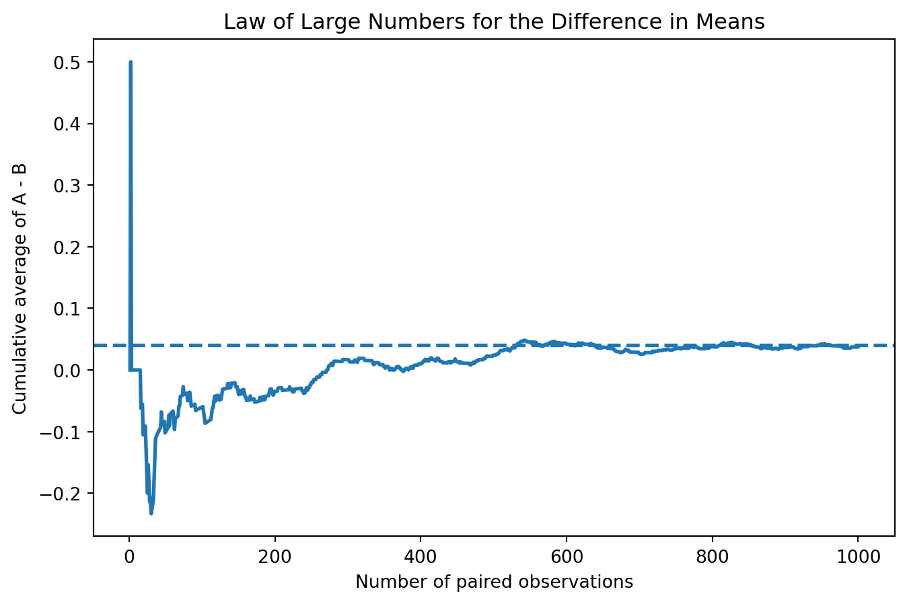
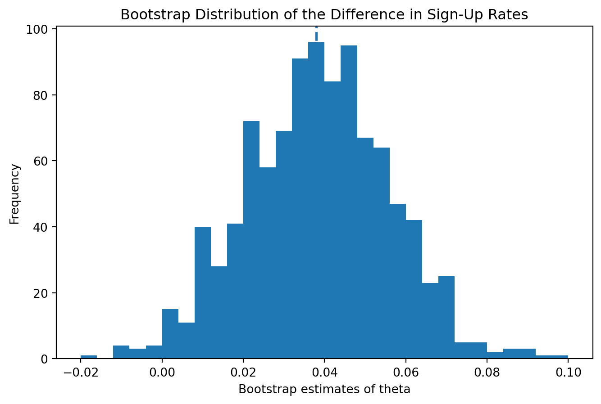
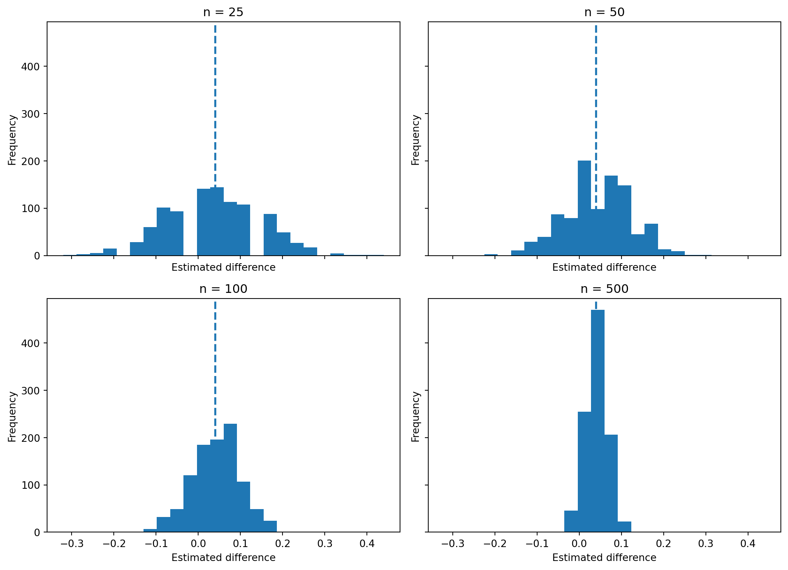
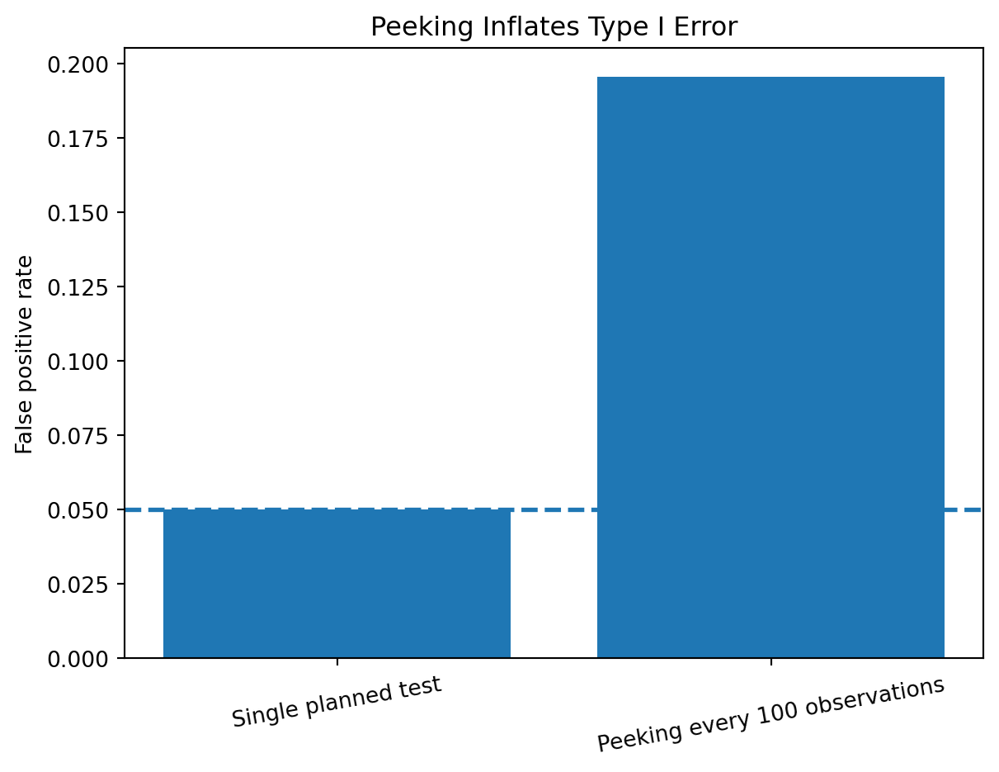

| Group | True sign-up probability | Simulated sample size | Observed sign-up rate | |
|---|---|---|---|---|
| 0 | CTA A | 0.22 | 1000 | 0.216 |
| 1 | CTA B | 0.18 | 1000 | 0.178 |
Estimated difference in sign-up rates (A - B): 0.038
True difference in sign-up rates: 0.040Simulating Key Ideas from Classical Frequentist Statistics
Chengwei Zhang
April 15, 2026
On a website landing page, even a small wording change can make people react a little differently. Suppose the page has a short call to action asking visitors to sign up for a newsletter. There are two versions. CTA A says “Sign up for our newsletter here!” and CTA B says “Stay up to date by signing up!”. They are close in meaning, but they do not sound exactly the same, so it is fair to ask whether one of them gets more sign-ups.
A straightforward way to compare them is to run an A/B test. In an A/B test, visitors are randomly shown one version or the other, and then the results from the two groups are compared. Here the result is whether the visitor signs up for the newsletter. The random assignment part matters because it makes the groups more comparable, so a difference in sign-up rates is more likely to come from the CTA wording rather than from the visitors themselves.
Statistically, each visitor gives a binary outcome: either they sign up or they do not. Because of that, each observation can be modeled as a Bernoulli random variable. If a visitor sees CTA A, let the probability of signing up be \(\pi_A\). If a visitor sees CTA B, let the probability of signing up be \(\pi_B\). The main quantity I care about is the difference between these two probabilities,
\[ \theta = \pi_A - \pi_B, \]
which tells us how much better or worse CTA A does compared with CTA B.
In real data, we do not know the population probabilities, so we estimate them with sample proportions. Since the outcomes are coded as 1 for sign-up and 0 for no sign-up, the sample mean in each group is just the observed sign-up rate. So the estimator is
\[ \hat\theta = \bar X_A - \bar X_B = \hat\pi_A - \hat\pi_B. \]
If \(\hat\theta\) is positive, the data suggest CTA A performs better. If it is negative, the data suggest CTA B performs better.
In a real experiment, the true sign-up probabilities would be unknown. For this assignment, it is easier to set them ourselves so we can compare the estimates to the truth. I use \(\pi_A = 0.22\) and \(\pi_B = 0.18\), so the true treatment effect is
\[ \theta = 0.22 - 0.18 = 0.04. \]
Then I simulate 1,000 visitors in each group. This gives a simple dataset that looks like the result of an A/B test, while still letting us know the true answer in the background.
| Group | True sign-up probability | Simulated sample size | Observed sign-up rate | |
|---|---|---|---|---|
| 0 | CTA A | 0.22 | 1000 | 0.216 |
| 1 | CTA B | 0.18 | 1000 | 0.178 |
Estimated difference in sign-up rates (A - B): 0.038
True difference in sign-up rates: 0.040The Law of Large Numbers says that as the sample size gets larger, the sample mean gets closer to the population mean. In this setting, that idea matters because our estimator \(\hat\theta = \bar X_A - \bar X_B\) is built from sample means. If both group means settle down as more observations are collected, then their difference should also settle down near the true value of \(\theta\).
To show this, I pair the simulated A and B draws, take the element-wise differences, and compute the cumulative average of those differences. Early on, the running average should jump around a lot because there is not much data. As the number of observations grows, the average should become more stable and move toward the true difference of 0.04.

The plot is pretty noisy at the beginning because the estimate is based on only a few observations. That makes sense, since random variation matters a lot when the sample is small. As more observations are added, the running average settles down and moves closer to the true difference of 0.04. That is basically why larger samples help in A/B testing: the estimate stops bouncing around as much.
A point estimate by itself is not enough. Even if the estimated difference looks positive, we still want to know how much uncertainty is attached to it. One way to measure that uncertainty is with the bootstrap. The bootstrap works by repeatedly resampling from the observed data, with replacement, and recalculating the statistic each time. The standard deviation of those resampled statistics is then used as an estimate of the standard error.
Here I take 1,000 bootstrap resamples from the CTA A data and 1,000 bootstrap resamples from the CTA B data. For each bootstrap sample I compute a new value of \(\hat\theta^* = \bar X_A^* - \bar X_B^*\). The resulting distribution of bootstrap estimates gives a direct sense of how much the difference in sign-up rates varies from sample to sample.
| Quantity | Value | |
|---|---|---|
| 0 | Bootstrap SE | 0.0177 |
| 1 | Analytical SE | 0.0178 |
| 2 | 95% CI lower | 0.0034 |
| 3 | 95% CI upper | 0.0726 |

The bootstrap and analytical standard errors are very close, which is a good sign. It suggests the resampling method is picking up about the same amount of uncertainty as the usual formula for two independent Bernoulli samples. Using the bootstrap standard error, the 95% confidence interval gives a reasonable range for the true difference in sign-up rates. In context, it suggests the data fit with CTA A doing better than CTA B by an amount somewhere inside that interval.
The Central Limit Theorem says that even when the original data are not Normally distributed, the sampling distribution of the sample mean becomes approximately Normal when the sample size is large. Since \(\hat\theta\) is a difference of two sample means, the same idea applies here. That means that for large enough samples, the distribution of the estimated treatment effect should look increasingly bell-shaped.
To visualize this, I simulate the estimator \(\hat\theta\) 1,000 times for four different sample sizes: \(n = 25, 50, 100,\) and \(500\) per group. Each histogram below shows the sampling distribution of the difference in sign-up rates for one of those sample sizes.

The smallest sample size gives a histogram that looks pretty rough. That is not surprising, because with only 25 observations per group there is still a lot of sampling noise. As the sample size increases to 50, 100, and then 500, the distribution gets smoother and more symmetric. By the time \(n = 500\), it is much more clearly centered around the true value and looks a lot more bell-shaped. That is the CLT showing up in the simulation.
Once the sampling distribution of \(\hat\theta\) is approximately Normal, we can use that fact to perform a hypothesis test. The null hypothesis is
\[ H_0: \theta = 0, \]
which says that the two CTAs have the same sign-up rate. The alternative hypothesis is
\[ H_1: \theta \neq 0, \]
which says that the sign-up rates differ.
The idea of the test is to compare the observed estimate to what I would expect to see if the null hypothesis were true. Under \(H_0\), the difference in sign-up rates should be centered at 0. I standardize the estimate using its standard error,
\[ z = \frac{\hat\theta - 0}{SE(\hat\theta)}. \]
If the CLT applies, then under the null this statistic is approximately standard Normal. That gives a reference distribution for judging how unusual the observed estimate is. A very large positive or negative value of \(z\) would suggest that the observed difference would be hard to explain in a world where the two CTAs are equally effective.
People often loosely call this a t-test, but here it makes more sense to think of it as a large-sample z-test. A classical t-test comes from Normally distributed data with an estimated variance. Here the data are Bernoulli, not Normal, and the justification mainly comes from the Central Limit Theorem. In a sample this large, the Normal and t distributions are so close that the conclusion is basically the same.
| Statistic | Value | |
|---|---|---|
| 0 | Estimated difference | 0.0380 |
| 1 | Standard error | 0.0178 |
| 2 | z-statistic | 2.1388 |
| 3 | Two-sided p-value | 0.0325 |
The estimated difference is positive, so CTA A did better in this simulated sample. The z-statistic tells me how many standard errors the estimate is away from 0, and the p-value turns that into evidence against the null hypothesis. Since the p-value is below 0.05, this result would usually be called statistically significant at the 5% level. So in this simulated sample, there is evidence that the two CTAs do not have the same conversion rate.
The same comparison can also be written as a regression problem. To do that, I stack the two groups into one dataset. The outcome variable \(Y_i\) equals 1 if the visitor signed up and 0 otherwise. The indicator variable \(D_i\) equals 1 if the visitor saw CTA A and 0 if the visitor saw CTA B. Then the regression model is
\[ Y_i = \beta_0 + \beta_1 D_i + \varepsilon_i. \]
This setup is pretty easy to interpret. When \(D_i = 0\), the expected value of \(Y_i\) is just the mean of group B, so \(\beta_0\) estimates \(\pi_B\). When \(D_i = 1\), the expected value becomes \(\beta_0 + \beta_1\), which is the mean of group A, so \(\beta_1\) must be the difference between the two group means. That means \(\hat\beta_1\) should be the same number as \(\hat\theta\) from the two-sample comparison.
| Quantity | Value | |
|---|---|---|
| 0 | beta_1 estimate | 0.0380 |
| 1 | Standard error | 0.0178 |
| 2 | t-statistic | 2.1377 |
| 3 | p-value | 0.0327 |
The coefficient on the treatment indicator is numerically the same as the difference in sample means from the previous section. The standard error and test statistic are also almost identical. This shows that a basic A/B test can also be written as a regression. In more realistic settings, that matters because regression makes it easier to add controls, interactions, or more than two treatment groups without changing the main idea.
One easy mistake in A/B testing is to keep checking the results as new data come in and then stop as soon as the p-value drops below 0.05. That sounds harmless at first, but it causes a real problem for frequentist inference. A single test at the 5% level only has a 5% false positive rate when the test is done once as planned. If I keep testing the same experiment over and over while the data are still coming in, every extra peek gives me another chance to reject the null just because of luck.
To show this, I simulate a world where the null hypothesis is actually true: both CTAs have sign-up probability 0.20, so there is no treatment effect. In each simulated experiment, I generate 1,000 observations per group and then run a hypothesis test after every 100 observations. If any one of those 10 tests is significant at the 0.05 level, I count the experiment as a false positive. Repeating this many times gives an empirical estimate of how much peeking inflates the Type I error rate.
| Procedure | False positive rate | |
|---|---|---|
| 0 | Single planned test | 0.0500 |
| 1 | Peeking every 100 observations | 0.1955 |

The simulated false positive rate under peeking is much larger than the usual 5% rate from a single planned test. So even when there is truly no difference between the two CTAs, repeated checking makes it much easier to convince yourself that you found a winner. In practice, that is why stopping rules need to be decided ahead of time. Otherwise, the usual p-values and confidence intervals no longer mean quite what we want them to mean.